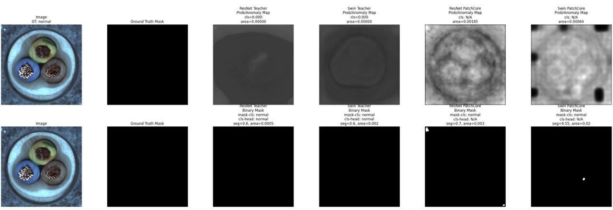
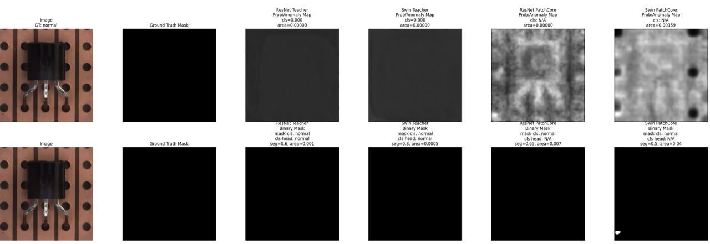

Detection Results
Model Outputs
Each card shows one test sample as a composite figure: the original image and ground truth mask,
followed by the anomaly map and binary mask from all four models side by side.
Add your composite images to the images/ folder to populate the cards.
Transistor — Test Sample #0

Transistor — Test Sample #1

Cable — Test Sample #0

Cable — Test Sample #1

Cable — Normal Sample

Transistor — Normal Sample
